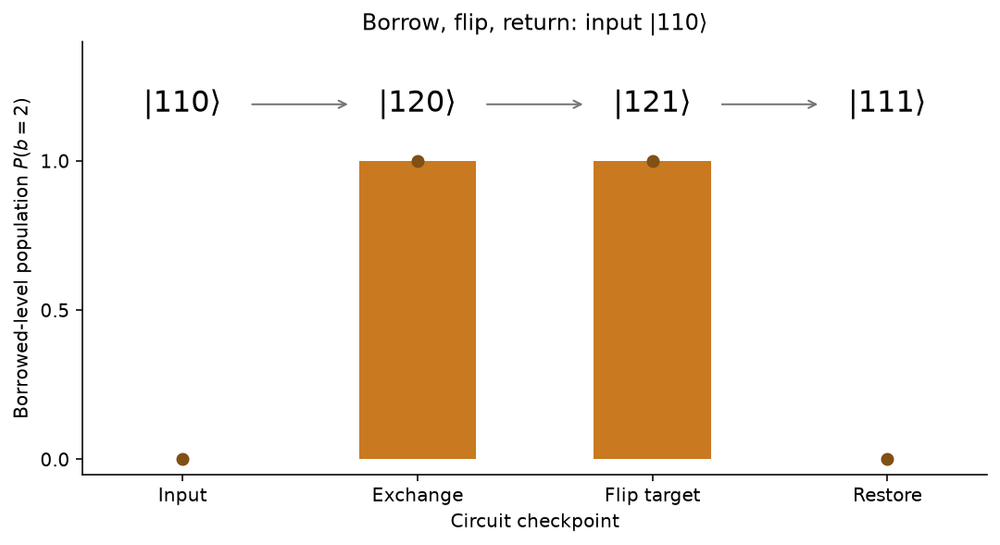
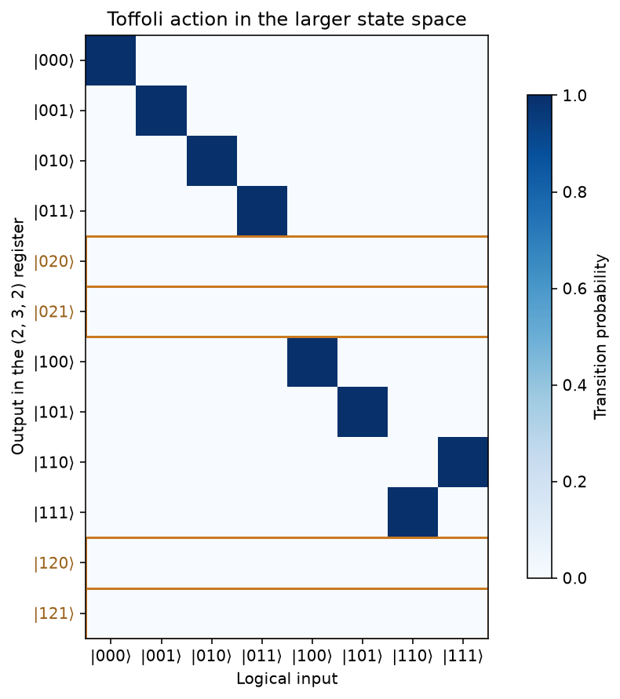

Build a Toffoli gate by borrowing a third level¶
-
Track
Foundations
-
Downloads
This tutorial constructs a Toffoli gate using two qubits and a qutrit. The qutrit has a third level that we can use during the computation, then empty before returning the result. We will use it to build a gate whose inputs and outputs still behave as three qubits.
A Toffoli gate has two controls, \(a\) and \(b\), and a target, \(t\). It flips the target exactly when both controls are \(1\):
where \(\oplus\) means addition modulo two. Starting the target at zero therefore computes the logical AND of the controls without changing their values. The gate exchanges \(|110\rangle\) and \(|111\rangle\) and leaves the other six logical basis states unchanged.
We give the middle control, \(b\), access to \(|2\rangle\) and construct the gate in three steps:
- Borrow the third level. When the input has \(a=1\) and \(b=1\), move \(b\) from \(|1\rangle\) to \(|2\rangle\).
- Flip the target. Apply \(X\) to \(t\) when \(b=2\).
- Return the control. Undo the first step so that \(b\) has its original value.
Each step uses a short sequence of gates, which we call a block. The extra level gives us room for this temporary change without adding another subsystem.
Set up the mixed register¶
Each control and the target gets a named one-slot register. The registers
a and t use the default qubit dimension, while dim=3 makes b a
qutrit. We address their slots as a[0], b[0], and t[0], following the
mixed-register guide.
The joint state has \(2\times3\times2=12\) amplitudes. Eight basis states
have b=0 or b=1; these form the logical subspace on which we want
Toffoli to act. The remaining four have b=2 and are available during the
gate.
import matplotlib.pyplot as plt
import numpy as np
import fatqat as fq
import fatqat.operations as ops
a = fq.QuantumRegister(1, name="a")
b = fq.QuantumRegister(1, name="b", dim=3)
t = fq.QuantumRegister(1, name="t")
dims = (2, 3, 2)
basis_labels = ["".join(map(str, digits)) for digits in np.ndindex(dims)]
Returned states follow register declaration order, with the last subsystem changing fastest. For these dimensions, \(|a,b,t\rangle\) has flat index \(6a+2b+t\). For example, \(|110\rangle\) is at index \(8\), and \(|120\rangle\) is at index \(10\). This differs from the three-qubit index because the middle system has three levels.
The helper below creates a basis state with unit amplitude at the requested index and zero everywhere else. We will use it both to choose inputs and to write down the states we expect from the gate.
def basis_state(a_level, b_level, t_level):
state = np.zeros(12, dtype=complex)
state[6 * a_level + 2 * b_level + t_level] = 1
return state
Exchange levels 1 and 2 when a=1¶
The first block must distinguish inputs with both controls equal to \(1\).
We do this with a controlled level exchange: exchange the middle system's
levels 1 and 2 when a=1, and leave them alone when a=0. Level b=0
stays unchanged in either case.
We can build the controlled exchange from two rotations and a controlled
phase. SubspaceRY(theta, (1, 2)) applies the usual qubit \(R_y\) rotation
within the ordered pair \((|1\rangle,|2\rangle)\) of b, leaving its
\(|0\rangle\) level untouched.
Between the rotations, CClock(1) supplies a phase that depends on a.
Its second operand sets the phase's root of unity. With operands
(b[0], a[0]), that operand is a qubit, so the action is
When a=0, the phase is always \(+1\) and the two opposite rotations cancel.
When a=1, level b=1 gains a minus sign, while levels 0 and 2 keep
their phase. In the selected pair, placing this sign change between the
rotations gives
The matrix on the right exchanges levels 1 and 2 with no extra phase. Matrix products act from right to left, so the positive rotation must be the first instruction. We store the three operations and their targets in execution order:
controlled_exchange = [
(ops.SubspaceRY(np.pi / 2, (1, 2)), b[0]),
(ops.CClock(1), (b[0], a[0])),
(ops.SubspaceRY(-np.pi / 2, (1, 2)), b[0]),
]
For a logical input, this block moves \(|11t\rangle\) to \(|12t\rangle\) and
leaves the other control combinations unchanged. After this exchange,
b=2 tells us that both controls were \(1\) at the input. Repeating the block
swaps the levels back, so the controlled exchange is its own inverse. The
qudit-gate reference gives the full
rotation and controlled-phase conventions.
Flip the target when b=2¶
After the first block, we want to flip t for states with b=2 and leave
it unchanged for states with b=0 or b=1.
Start with the controlled phase on (b[0], t[0]). It applies \(Z\) to t
when b=1 and the identity when b=0 or b=2. Placing H before and
after it gives a target flip for b=1, because \(H Z H=X\). For the other
two levels, the Hadamards cancel: \(H I H=I\).
To make this sequence act on states that enter with b=2, first exchange
levels 1 and 2 using SwapLevels(1, 2). Apply the H, CClock, H
sequence, then exchange the levels again. The table tracks b through
these operations:
b at the start of this block |
After the first swap | Effect of H, CClock, H on t |
After the second swap |
|---|---|---|---|
| 0 | 0 | Unchanged | 0 |
| 1 | 2 | Unchanged | 1 |
| 2 | 1 | Flipped | 2 |
The two swaps return b to the value it had at the start of this block.
Only the target of a state that entered with b=2 is flipped.
flip_on_level_2 = [
(ops.SwapLevels(1, 2), b[0]),
(ops.H, t[0]),
(ops.CClock(1), (b[0], t[0])),
(ops.H, t[0]),
(ops.SwapLevels(1, 2), b[0]),
]
CClock operand order
In both CClock calls, put the qutrit b first and the qubit (a or
t) second. The second operand's dimension sets the phase's root of
unity. A qubit gives the \(\pm1\) phases used above; putting the qutrit
second would instead introduce third roots of unity and change the gate.
Restore the middle control¶
For input \(|110\rangle\), the first two blocks produce \(|121\rangle\). The target has the correct value, \(t=1\), but the middle control is still at \(b=2\). Toffoli must leave both controls at their input values, so the required output is \(|111\rangle\).
Repeat controlled_exchange to finish the gate. Since a=1, it exchanges
b's levels 1 and 2 again, taking \(|121\rangle\) to \(|111\rangle\) without
changing the target. Inputs with a=0 or b=0 remain unchanged by this
last block.
This reversal of the temporary encoding is called uncomputation. It uses the same coherent gate operations as the first block, so it also restores superpositions. We will check an example below.
Assemble and run the program¶
Join the three blocks in order: the controlled level exchange, the target
flip, and the same controlled exchange again. make_program appends their
operations through Program.add in their execution order. Keeping the
block lists lets us run the same
construction up to any intermediate instruction later.
sequence = controlled_exchange + flip_on_level_2 + controlled_exchange
def make_program(instructions):
program = fq.Program([a, b, t])
for operation, targets in instructions:
program.add(operation, targets)
return program
toffoli_program = make_program(sequence)
We use ideal statevector simulation to inspect the complete complex state
after a sequence of gates. initial_state supplies the input vector, and
result_config disables counts and explicitly requests the final state.
With no measurements or noise, these runs are deterministic and need no
random seed.
The following helper returns that statevector. It accepts the same lists
as make_program, so it can run either the full gate or a prefix of it.
state_backend = fq.simulator.Simulator(method="statevector", runtime="numpy")
def evolve(instructions, initial_state):
result = state_backend.run(
make_program(instructions),
initial_state=initial_state,
result_config={"counts": False, "final_state": True},
).result()
return result.get_statevector()
Follow one input through the borrowed level¶
Start with \(|110\rangle\): both controls are \(1\), and the target is \(0\). The controlled exchange moves the middle control to level 2, the middle block flips the target, and restoration brings the control back. The expected states at the block boundaries are
The boundaries occur after 0, 3, 8, and 11 instructions. Each prefix run starts from the same \(|110\rangle\) input; its returned state is compared directly with the expected complex vector.
We also compute the probability of finding b in level 2. Reshaping a
state to (2, 3, 2) gives one axis per subsystem. The slice [:, 2, :]
selects every amplitude with b=2, regardless of a or t, and summing
their squared magnitudes gives the borrowed-level population.
checkpoints = [0, 3, 8, 11]
stage_names = ["Input", "Exchange", "Flip target", "Restore"]
branch_states = [evolve(sequence[:stop], basis_state(1, 1, 0)) for stop in checkpoints]
expected_digits = [(1, 1, 0), (1, 2, 0), (1, 2, 1), (1, 1, 1)]
for state, digits in zip(branch_states, expected_digits):
np.testing.assert_allclose(state, basis_state(*digits), atol=1e-12, rtol=0)
branch_labels = [basis_labels[np.argmax(np.abs(state))] for state in branch_states]
borrowed_populations = [
np.sum(np.abs(state.reshape(dims)[:, 2, :]) ** 2) for state in branch_states
]
for name, label, population in zip(stage_names, branch_labels, borrowed_populations):
print(f"{name:>11}: |{label}>, P(b=2) = {population:.3e}")
Runtime result
Input: |110>, P(b=2) = 0.000e+00
Exchange: |120>, P(b=2) = 1.000e+00
Flip target: |121>, P(b=2) = 1.000e+00
Restore: |111>, P(b=2) = 7.183e-32
The printed population is zero at the input, one after the exchange and the target flip, and zero again to numerical precision after restoration. The following figure places these populations beside the state labels so we can see when this input occupies the borrowed level.
figure, axis = plt.subplots(figsize=(7.6, 4.2))
positions = np.arange(len(checkpoints))
axis.bar(positions, borrowed_populations, width=0.5, color="#c97920")
axis.scatter(positions, borrowed_populations, color="#805014", zorder=3)
for position, label in zip(positions, branch_labels):
axis.text(
position, 1.19, rf"$|{label}\rangle$", ha="center", va="center", fontsize=16
)
for position in positions[:-1]:
axis.annotate(
"",
xy=(position + 0.72, 1.19),
xytext=(position + 0.28, 1.19),
arrowprops={"arrowstyle": "->", "color": "0.45"},
)
axis.set(
xticks=positions,
xticklabels=stage_names,
yticks=[0, 0.5, 1],
ylim=(-0.05, 1.4),
xlabel="Circuit checkpoint",
ylabel=r"Borrowed-level population $P(b=2)$",
title=r"Borrow, flip, return: input $|110\rangle$",
)
axis.spines[["top", "right"]].set_visible(False)
figure.tight_layout()
plt.show()
Runtime result

This figure follows one illustrative input. Its horizontal axis marks block boundaries, with no physical timing implied by their spacing. Rotations and swaps within a block can also populate level 2; the bars describe only the returned states at the four checkpoints. The tiny final residual is consistent with floating-point arithmetic.
Check a superposition¶
The basis-state trace shows where the population goes, but a quantum gate
must also act correctly on superpositions. Prepare a with H followed
by S, giving \((|0\rangle+i|1\rangle)/\sqrt2\). A Shift(1) puts b
in level 1, while t starts at zero.
This input contains two branches. The \(|010\rangle\) branch should stay unchanged because its first control is zero. The \(|110\rangle\) branch should undergo the exchange, flip, and restoration we just traced. The full gate should therefore give
After the first block, only the second branch occupies level 2. Restoration
must bring it back without altering its relative factor \(i\). We keep preparation
separate from the gate: first create coherent_input, then pass it to a run
of sequence. The assertions check both the expected complex output and
the absence of any remaining borrowed-level amplitude.
preparation = [
(ops.H, a[0]),
(ops.S, a[0]),
(ops.Shift(1), b[0]),
]
coherent_input = evolve(preparation, basis_state(0, 0, 0))
expected_input = (basis_state(0, 1, 0) + 1j * basis_state(1, 1, 0)) / np.sqrt(2)
np.testing.assert_allclose(coherent_input, expected_input, atol=1e-12, rtol=0)
coherent_output = evolve(sequence, coherent_input)
expected_output = (basis_state(0, 1, 0) + 1j * basis_state(1, 1, 1)) / np.sqrt(2)
np.testing.assert_allclose(coherent_output, expected_output, atol=1e-12, rtol=0)
np.testing.assert_allclose(
coherent_output.reshape(dims)[:, 2, :], 0, atol=1e-12, rtol=0
)
print("Nonzero output amplitudes:")
for label, amplitude in zip(basis_labels, coherent_output):
if abs(amplitude) > 1e-12:
print(f" |{label}>: {amplitude:.6f}")
print(
"Final borrowed-level population:",
np.sum(np.abs(coherent_output.reshape(dims)[:, 2, :]) ** 2),
)
Runtime result
Nonzero output amplitudes:
|010>: 0.707107-0.000000j
|111>: 0.000000+0.707107j
Final borrowed-level population: 3.0032757235022374e-32
The two printed amplitudes are \(1/\sqrt2\) and \(i/\sqrt2\), as expected.
Both branches end with b=1, while a and t are entangled, much like
the pair in the Bell-state tutorial, here with a relative
phase of \(i\).
Measuring these branches in the computational basis would give equal probabilities. Replacing \(i\) by \(-i\) would give the same probabilities but a different quantum state. Comparing complex amplitudes lets us detect that phase error, which a probability-only check would miss.
Check all eight logical inputs¶
We have checked two examples. To establish the gate's action on every
logical input, switch to the unitary simulation method. It returns the
full \(12\times12\) matrix of the gate, with no input preparation included.
Each column is the output state for one basis input. Entry \((i,j)\) is the amplitude for output state \(i\) when the input is state \(j\). Both axes use the result conventions introduced above. For example, the column for \(|110\rangle\) should have unit amplitude in the row for \(|111\rangle\).
The logical states are interleaved with the borrowed-level states in this ordering. We select the eight logical rows and columns to obtain the gate's logical matrix, and separately select the four borrowed-level output rows to check for leakage from logical inputs.
For comparison, build an independent \(8\times8\) Toffoli matrix from its
Boolean rule. Here the indices use the three-bit formula \(4a+2b+t\).
For each input column, t_bit ^ (a_bit & b_bit) gives the output target
bit; we put a one in the corresponding output row and leave the other
entries zero.
unitary = (
fq.simulator.Simulator(method="unitary", runtime="numpy")
.run(toffoli_program, result_config={"counts": False, "final_state": True})
.result()
.get_unitary()
)
logical_indices = np.array([0, 1, 2, 3, 6, 7, 8, 9])
borrowed_indices = np.array([4, 5, 10, 11])
expected_ccx = np.zeros((8, 8), dtype=complex)
for column, (a_bit, b_bit, t_bit) in enumerate(np.ndindex(2, 2, 2)):
output_bit = t_bit ^ (a_bit & b_bit)
row = 4 * a_bit + 2 * b_bit + output_bit
expected_ccx[row, column] = 1
logical_unitary = unitary[np.ix_(logical_indices, logical_indices)]
leakage_block = unitary[np.ix_(borrowed_indices, logical_indices)]
np.testing.assert_allclose(logical_unitary, expected_ccx, atol=1e-12, rtol=0)
np.testing.assert_allclose(leakage_block, 0, atol=1e-12, rtol=0)
print("Maximum complex logical error:", np.max(np.abs(logical_unitary - expected_ccx)))
print("Maximum final leakage amplitude:", np.max(np.abs(leakage_block)))
Runtime result
Maximum complex logical error: 2.881811959275015e-16
Maximum final leakage amplitude: 2.0885136050691678e-16
Both printed errors should be near floating-point precision. The first
assertion compares the logical matrix with Toffoli, including every complex
phase. The second requires the amplitudes from logical inputs to level-2
outputs to be zero. We use the returned arrays directly; FatQat's
Estimator accepts qubit-only programs.
Any logical superposition is a linear combination of the eight input columns. Matching all those columns, including their phases and their borrowed-level entries, therefore establishes the intended action for arbitrary logical superpositions to numerical precision. No phase adjustment or renormalization is applied in these comparisons.
To read the truth table visually, plot the squared magnitudes of the eight logical input columns. Keep all twelve output rows so that any final population in the borrowed level would also appear.
transition_probabilities = np.abs(unitary[:, logical_indices]) ** 2
logical_labels = [basis_labels[index] for index in logical_indices]
figure, axis = plt.subplots(figsize=(7.2, 6.3))
heatmap = axis.imshow(transition_probabilities, cmap="Blues", vmin=0, vmax=1)
axis.set(
xticks=np.arange(8),
xticklabels=[rf"$|{label}\rangle$" for label in logical_labels],
yticks=np.arange(12),
yticklabels=[rf"$|{label}\rangle$" for label in basis_labels],
xlabel="Logical input",
ylabel="Output in the (2, 3, 2) register",
title="Toffoli action in the larger state space",
)
for row in borrowed_indices:
axis.axhspan(
row - 0.5, row + 0.5, facecolor="none", edgecolor="#c97920", linewidth=1.5
)
axis.get_yticklabels()[row].set_color("#996019")
figure.colorbar(heatmap, ax=axis, label="Transition probability", shrink=0.8)
figure.tight_layout()
plt.show()
Runtime result

Read the heatmap one column at a time. Inputs 110 and 111 exchange
places, while the other six logical inputs return to themselves. The four
orange-outlined rows correspond to b=2 and have zero population to numerical
precision for all eight inputs. The figure shows the correct truth table
and return to the logical subspace; the complex comparisons above supply
the phase-sensitive verification.
Count the interactions¶
Each CClock acts on the qutrit b and one qubit, either a or t, so
these are qubit–qutrit interactions. The other gates act on one qubit or
one qutrit at a time. Count both groups from the same sequence that we
simulated, using each operation's num_subsystems value. Input preparation
is separate and does not enter this count.
interaction_count = sum(operation.num_subsystems == 2 for operation, _ in sequence)
single_gate_count = sum(operation.num_subsystems == 1 for operation, _ in sequence)
print(f"Primitive instructions: {len(sequence)}")
print(f"Qubit–qutrit interactions: {interaction_count} (all CClock)")
print(f"Single-qubit or single-qutrit gates: {single_gate_count}")
Runtime result
Primitive instructions: 11
Qubit–qutrit interactions: 3 (all CClock)
Single-qubit or single-qutrit gates: 8
There are eleven primitive instructions: three qubit–qutrit interactions,
two single-qubit gates (H on t), and six single-qutrit gates (four
rotations and two level swaps on b). Together they implement Toffoli on
the eight logical states, preserving their relative phases and leaving no
final population in the borrowed level to numerical precision.
In Efficient Toffoli Gates Using Qudits, Ralph, Resch, and Gilchrist showed how access to a third level reduces Toffoli to three controlled-sign interactions. This FatQat construction follows that principle with a different gate sequence. To compare physical speed or fidelity, we would also need the durations and errors of the rotations and interactions.
Exercise: leave out restoration¶
What happens if we stop after flipping the target? Run the following code
after the tutorial cells. It applies only the first two blocks to
\(|110\rangle\), then prints the output state and the probability that b
is still at level 2. Before running it, predict whether b will end at
level 1 or level 2.
without_restoration = controlled_exchange + flip_on_level_2
unfinished_state = evolve(without_restoration, basis_state(1, 1, 0))
for label, amplitude in zip(basis_labels, unfinished_state):
if abs(amplitude) > 1e-12:
print(f"|{label}>: {amplitude:.6f}")
print("P(b=2):", np.sum(np.abs(unfinished_state.reshape(dims)[:, 2, :]) ** 2))
Compare your result with the required output \(|111\rangle\), where b=1
and P(b=2)=0. Check both the target and the middle control: has the gate
returned both to their required values?